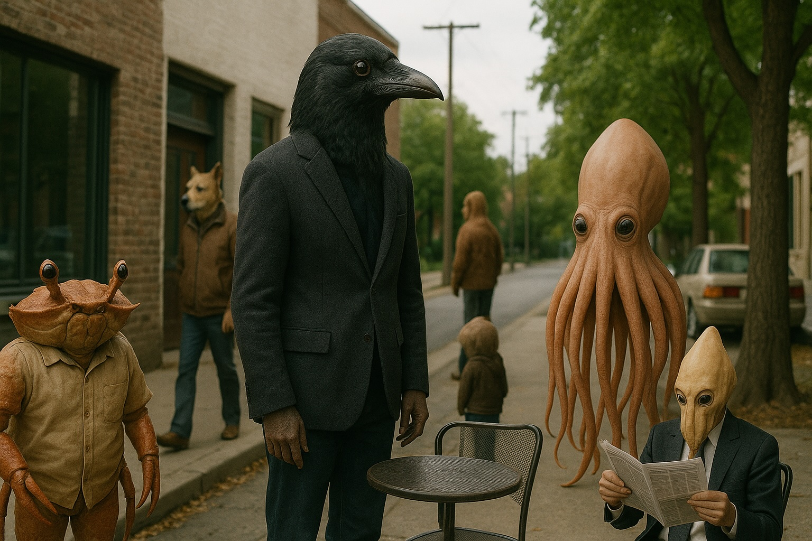

ボイスドラマ「グレート・オッド・ワン」感想
 公式YoutubeみなさんSFは好きですか? わたしは大好きです。とくに短編SFと言われるジャンルが好きで、ジェイムズ・ティプトリー・ジュニアの描く異星人の奇妙な生態とかすごくおもしろいなと思います。海外ドラマだったらスタートレックとか、あれも毎回いろんな異種族が出てきてたのしいですよね。オムニバスという形式は、小粒のアイデアの実験場だと思います。短い物語のなかに、「もしもXがYだったら」という着想、たとえば「もしもアパートの隣室に異種族が住んでいたら」といった、ピリリとスパイスの効いたアイデアが詰められている。オムニバスは、さながらアイデアの宝石箱。だからわたしは短編SFが好きなのです。日本の作品だと、世にも奇妙な物語とか、星新一の小説とか、ああいったやつです。
さて、このグレート・オッド・ワンも、ボイスドラマのSF短編集でです。作者のNoah-Revさんは、イラストからストーリーライティングから音声編集までなんでもこなしてしまう、とんでもないクリエイターで、しかもどれもクオリティーがたっかい! とくにNoah-Revさんのコメディーは個人的に絶品だと思ってまして、グレート・オッド・ワンでもその手腕が如何なく発揮されています。全5話構成で、あらすじはこんな感じです。
- Scene 1: 安アパートで仕事の報告をする犯罪組織の構成員。そこへ隣室のカップルが帰ってくるがなにか様子が…
- Scene 2: 異種族お笑いコンビによる深夜ラジオの放送中。しかしあるリスナー投稿をきっかけに…
- Scene 3: 運送業を生業とする主人公は新しい現場で仕事をはじめる。しかし同僚の様子がなにやらおかしいようだ…
- Scene 4: 発見された「遺物」の解析を進める博士とAI。どうやらただの遺物ではないらしく…
- Scene 5: 遺物保管庫で「遺物」を閲覧する作家と少年。そして明かされる世界の現状と歴史…
どの話も秀逸でおもしろいのですが、個人的に特筆したいのがScene 2です。ネタバラししてしまうと、お笑い芸人がパーソナリティーを努めるオールナイト日本のパロディーになってます。わたしも学生のころは、勉強するふりをしながら、ナインティーナインのオールナイト日本とか深夜ラジオを毎日聴いてたので、なつかしくなりました。すごいのが、脚本、しゃべり、空気感、どれを取っても、ほんとにほんものの深夜ラジオみたいなんですよ。CMとかも途中に挿入されたりして作り込みが細かい。お笑いコンビ・ヨムロックのトオノとコイズミを演じられてる焔屋稀丹さんと大森ショージさん、芸人っぽいしゃべりを芝居であんなに再現できるのほんとにすごいなーと。そんでもって、片割れのコイズミが性格悪くてですね、聴いててじゃっかんリアルに気分が悪くなってきたほどなんですが、やりすぎの差別めいた毒舌で現場の空気が悪くなっていくのは、フィクションながら冷や冷やしました。
このヨムロックというコンビの間にある溝というのも、実は作品の背骨になっているあるテーマに沿ったものになってます。もし色んな種族が同じ世界に同居していたら?グレート・オッド・ワンは、共通の舞台で展開されるオムニバス作品ではあるんですが、この世界の抱える問題が、話が進むうちに徐々に明らかになっていきます。こういうのもすごくSF的でいいんですよね。その背後にあるテーマは、ぜひご自身の耳で確かめてみてください。